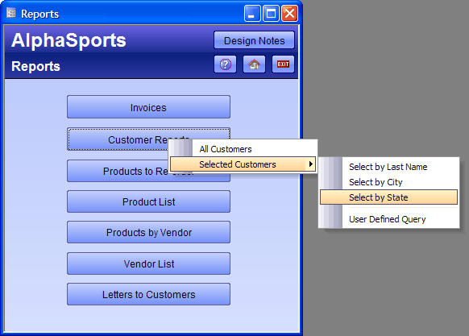

Creating and Using a Multi-Level pop-up Menu
The most interesting aspect of Button9 is the menu of choices that appears with the OnPush event. This button runs the customer_report script, which produces this effect.

Xbasic and Xdialog Code Run by the customer_report Script
The customer_report script displays the following menus. The following code generates the menus and responds to the operator's selection.
|
menu = <<%str% All Customers Selected Customers|Select by Last Name Selected Customers|Select by City Selected Customers|Select by State Selected Customers|- Selected Customers|User Defined Query %str% result = ui_popup_menu(menu) if result = "All customers" then report.preview("Customer List") else if result = "Select by Last Name" then script_play("cust_rep_for_lastname") else if result = "Select by City" then script_play("cust_rep_for_city") else if result = "Select by State" then script_play("cust_rep_for_state") else if result = "User Defined Query" then form.view("CustQueryReport") end if |
An Explanation of the Code
The first line starts a string definition and assigns it to a variable named menu.
|
menu = <<%str% |
This line adds the menu entry: "All Customers".
|
All Customers |
The next three lines add the menu entry "Selected Customers", with three child menu items: "Select by Last Name", "Select by City", and "Select by State".
|
Selected Customers|Select by Last Name Selected Customers|Select by City Selected Customers|Select by State |
This line puts a separation bar between the third and fourth child menu entries.
|
Selected Customers|- |
This line adds "User Defined Query" as a fourth child menu item.
|
Selected Customers|User Defined Query |
This line terminates the string definition. Please refer to <<%DELIMITER% ? %DELIMITER% for more information.
|
%str% |
Finally, we display the menu.
|
result = ui_popup_menu(menu) |
This set of lines defines the action to take if a menu item is clicked.
|
if result = "All customers" then report.preview("Customer List") else if result = "Select by Last Name" then script_play("cust_rep_for_lastname") else if result = "Select by City" then script_play("cust_rep_for_city") else if result = "Select by State" then script_play("cust_rep_for_state") else if result = "User Defined Query" then form.view("CustQueryReport") end if |
See Also
Creating the Navigation Toolbar, Displaying the Navigation Toolbar, The Main Menu Form, UI_POPUP_MENU()